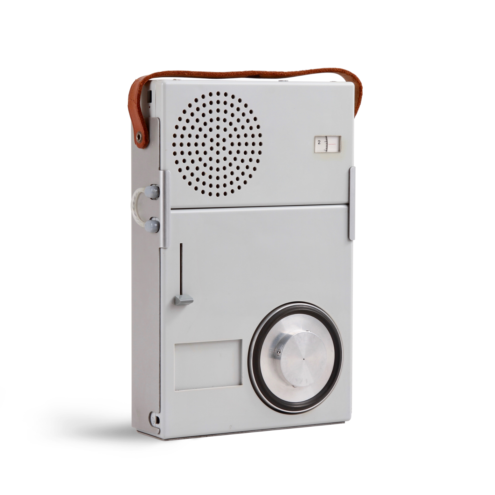

REAL-TIME SOUNDSCAPE DEVICE
23100991 SONG JAE CHANG
우리는 보통 여행을 기억할 때 이미지나 사진을 먼저 떠올립니다. 하지만 실제로 그 공간을 더 생생하게 만드는 것은 '소리'라고 생각했습니다.
그렇다면, 지금 이 순간의 다른 도시를 소리로 경험할 수 있다면 어떨까요?
CITY SYNC는 소리를 매개로 시공간을 연결하는 새로운 인터랙션을 제안합니다.
CITY SYNC는 특정 도시의 '지금'을 들을 수 있는 사운드 디바이스입니다.
이 장치는 소리를 단순히 저장하여 재생하지 않습니다.
대신, 실시간 데이터를 기반으로 그 순간의 소리를 생성합니다.
사용자는 원하는 도시를 선택하고 그 도시의 현재 환경을 청각적으로 경험할 수 있습니다.

메인 디바이스는 소형 아날로그 라디오 형태로 디자인했습니다. 직관적인 다이얼을 통해 도시를 선택할 수 있습니다.
각 도시는 하나의 캡슐로 구성되어 있습니다. 카세트 테이프 형태의 캡슐을 삽입하여 물리적으로 '도시를 선택하는 경험'을 제공합니다.
CITY SYNC의 핵심은 '실시간 데이터 기반 사운드 생성'입니다.
장치는 특정 도시의 기상 데이터를 수신하고, 이를 사운드로 변환합니다. 예를 들어, 비가 오면 빗소리가 생성되고, 맑은 날에는 바람과 새소리가 출력됩니다.
즉, 이 장치는 소리를 재생하는 것이 아니라 데이터를 해석해 소리를 만들어냅니다. 같은 도시라도, 결코 같은 소리는 존재하지 않습니다.
사용자는 공간을 이동하지 않아도 '지금 이 순간의 타인'과 연결됩니다.
Rainy Afternoon, 03:00 PM
Neon Lights, 08:00 PM
Zen Garden, 07:00 AM
Shibuya Crossing, 10:00 PM
CITY SYNC는 도시를 저장하는 장치가 아닙니다. 도시와 '지금'을 연결하는 매개체입니다. 우리는 이 프로젝트를 통해 공간을 경험하는 새로운 방식으로서 '소리'를 제안합니다.